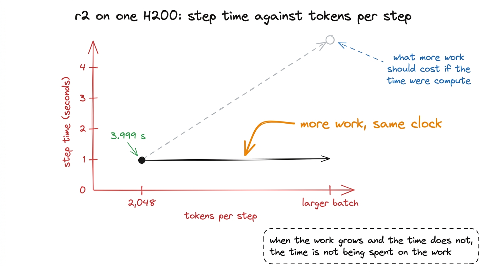
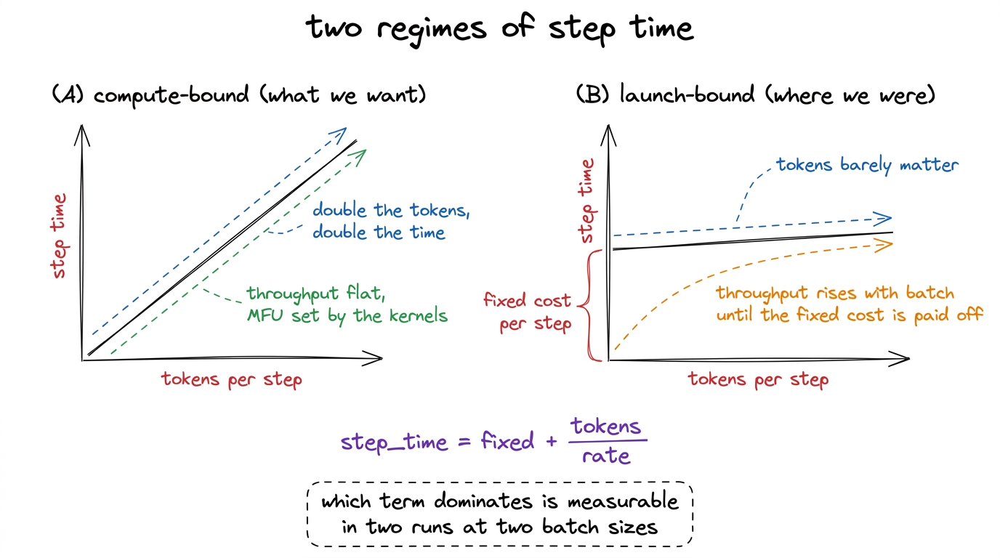
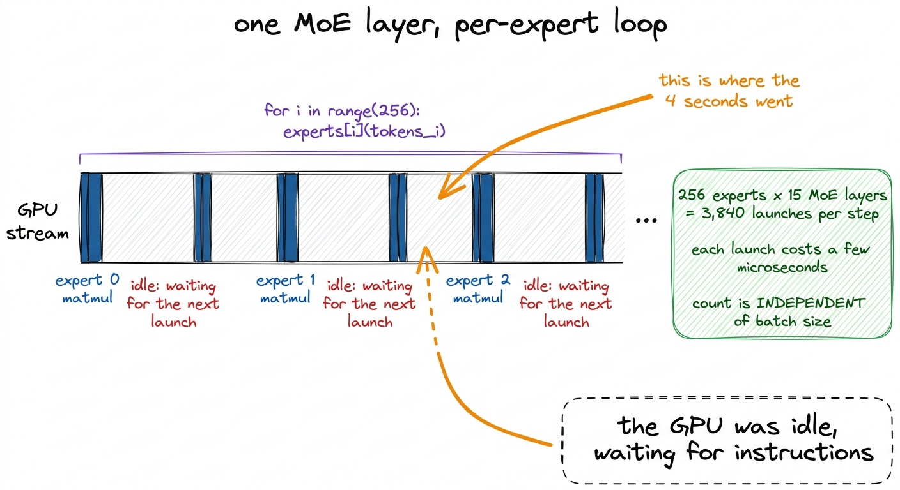
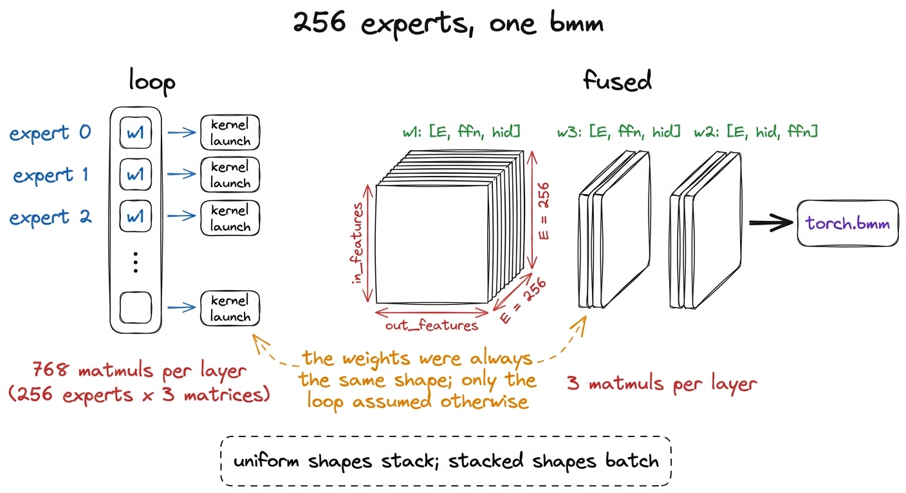
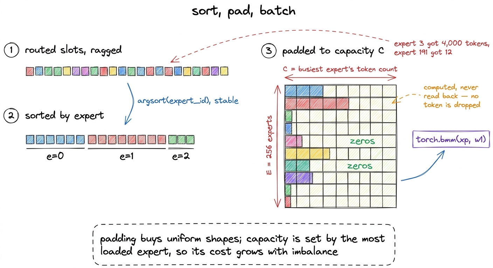
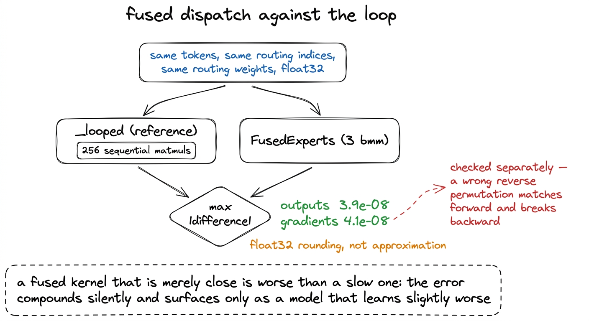
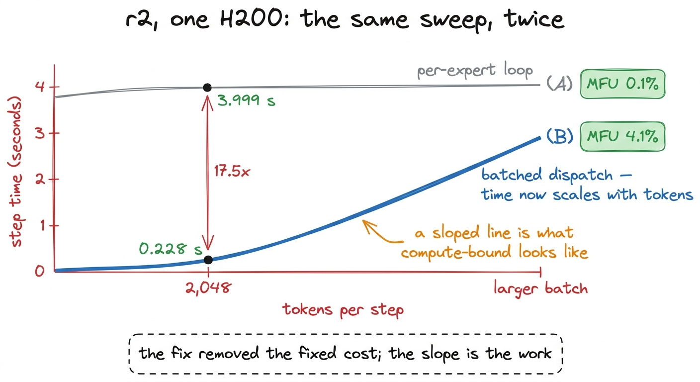

The expert loop: eight times the work, the same time
Step time barely moved as tokens grew eightfold, which is the signature of fixed per-step overhead. 3,840 kernel launches, three batched matrix multiplies, and an equivalence check to 3.9e-08.
The first attempt of the MFU investigation began with a measurement that was not supposed to be interesting. We were sweeping tokens per step to find the largest microbatch that fit in memory, on rung r2, which has 307 million active parameters and was benchmarked on one H200. The sweep printed step times alongside batch sizes, and the rows did not make sense together.
At 2,048 tokens per step, a step took 3.999 seconds. Raising the batch multiplied the arithmetic in the step several times over, and the clock barely responded.

figure rendering · The batch sweep that started attempt 1. The dashed line is the expectaThat shape is the subject of this chapter, because recognising it is worth more than the specific fix it led to. A step time that barely responds to the amount of work in the step is telling you that the work is not what the step is spending its time on. Something fixed per step dominates, and until that fixed cost is removed, every other optimisation is being applied to a minority of the runtime.
Reading the shape
Total step time can be split into two terms: a fixed cost that is paid once per step regardless of size, and a variable cost proportional to the tokens processed.
step_time = fixed + tokens / rateIf the variable term dominates, doubling tokens roughly doubles step time, and throughput in tokens per second stays flat. That is a compute-bound run, and it is the state we want, because in that state MFU is a property of the kernels rather than of the schedule around them.
If the fixed term dominates, step time is nearly constant and throughput rises almost linearly with batch size. Our sweep put us firmly in the second regime. Multiplying the tokens in a step left the clock where it was, which means that at 2,048 tokens the GPU was spending nearly all of a four-second step doing something other than arithmetic.
MFU makes the same point in one number. With MFU = 6 x active_parameters x tokens_per_second / peak_FLOPs and an H200's roughly 989 TFLOP/s in bf16, r2 at 2,048 tokens per 3.999-second step scored 0.1%. Well-tuned dense training reaches 40 to 55%. A number that far from the floor of plausibility is usually not a tuning problem; it is a structural one.

figure rendering · The two shapes. Reading which one a run is in takes two measurements aWhere the fixed cost came from
The mixture-of-experts dispatch is the part of the model that takes each token's chosen experts and actually runs them. Our differentiable rewrite of it, described in the chapter on the four blockers in the released code, kept the structure of the reference implementation: a Python loop over experts.
for i, count in enumerate(counts.tolist()):
if count == 0:
continue
output.append(self.experts[i](tokens_for_expert_i))Each iteration launches work on the GPU for one expert. r2 has 256 experts and 15 mixture-of-experts layers, its layer 0 being dense, so a single forward pass walks that loop 3,840 times. Each of those iterations is itself several matrix multiplications, because a K3 expert applies three weight matrices: a gate projection, an up projection and a down projection.
A GPU kernel launch has a fixed cost of a few microseconds, paid on the host side, regardless of whether the kernel then multiplies a hundred rows or a hundred thousand.1 The cost is not the GPU's. It is the CPU building the launch, pushing it into the stream, and the GPU pulling the next command once the previous one retires. A launch takes microseconds and a small expert matmul on a few dozen tokens also takes microseconds, so the two are the same order of magnitude and the queue never gets ahead of the device. Multiply a few microseconds by 3,840 and the arithmetic lands in the seconds, which is the whole step.
The property that makes this diagnosis certain, rather than merely plausible, is that 3,840 does not depend on the batch size. It is 256 times 15 whether the step contains 2,048 tokens or 16,384. Sending eight times as many tokens through the model makes each expert's matmul eight times larger and leaves the number of launches exactly where it was. A cost that does not scale with tokens, in a step whose time does not scale with tokens, is the cost.

figure rendering · What a step looked like before attempt 1. The blocks are the work; theThe fix, and why it is available at all
Every routed expert in the model has the same shape. They differ in their weights and in how many tokens they receive, and in nothing else. Three weight matrices per expert, identical dimensions across all 256 of them.
That uniformity is what makes the loop unnecessary. Weights of the same shape stack, so the 256 separate gate projections become one tensor of shape [num_experts, out_features, in_features], and likewise for the up and down projections. A batched matrix multiplication then runs all 256 experts in a single kernel.
w1 = torch.stack([e.w1.weight.data for e in experts]) # [E, ffn, hid]
w2 = torch.stack([e.w2.weight.data for e in experts]) # [E, hid, ffn]
w3 = torch.stack([e.w3.weight.data for e in experts]) # [E, ffn, hid]With the weights stacked, the body of the dispatch is three bmm calls and an activation:
gate = torch.bmm(xp, self.w1.transpose(1, 2))
up = torch.bmm(xp, self.w3.transpose(1, 2))
act = self.act_fn(torch.cat([gate, up], dim=-1))
y = torch.bmm(act.to(xp.dtype), self.w2.transpose(1, 2))Per layer, the loop issued 256 experts times three matrices, which is 768 matrix multiplications. The batched version issues three, and the count no longer depends on the expert count at all.2 Fusing the experts changes the parameter names in the state dict, because an nn.ModuleList of 256 experts becomes three stacked tensors. That is acceptable when training from scratch and writing your own checkpoints, which is our case. Loading a released Kimi checkpoint into a fused model would require un-stacking first.

figure rendering · Stacking the expert weights. The arithmetic performed is the same; theThe complication: experts receive different numbers of tokens
A batched matrix multiplication requires uniform shapes. Routing produces the opposite: after the router picks six experts for each token, one expert may hold several thousand tokens and its neighbour a few dozen. The buffer the bmm reads has to be a dense [experts, capacity, features] tensor, and there is only one capacity to choose.
The dispatch therefore sorts the routed token slots by expert, computes each expert's count, and pads every expert's group out to the size of the busiest one:
counts = torch.bincount(flat, minlength=E)
C = int(counts.max()) # capacity = the busiest expert
order = torch.argsort(flat, stable=True) # group slots by expert
xp = x.new_zeros((E, C, self.hidden_dim)) # dense padded buffer
xp[e_loc, r_loc] = x[tok_of] # scatter tokens into their slotsPadding slots hold zeros. Their outputs are computed along with everything else and are then never gathered, because the reverse permutation only reads the slots that a real token was scattered into. No token is dropped. This is a different design from the capacity-factor schemes common in mixture-of-experts implementations, which cap each expert at a fixed number of tokens and discard the overflow; those change what the model computes, and this does not.3 Dropping tokens is not always wrong, and at very large scale it is a reasonable trade. It is wrong here for a specific reason: this project is measuring whether a small K3 replica behaves like K3, and a dispatch that silently discards routed tokens adds a difference between our model and the reference that no benchmark would attribute correctly.
The cost of the choice is arithmetic spent multiplying zeros, and that cost grows with routing imbalance, since capacity is set by the busiest expert. At the time of this attempt our measured load imbalance was 42.8, meaning the busiest expert held nearly 43 times the average load, which looked like an enormous amount of wasted work. Attempt 2 went after exactly that waste, and the next chapter reports what it was worth: fixing the balancer moved imbalance from 42.8 to 1.8 and MFU from 4.1% to 4.6%. The padded arithmetic was real and it was not where the time was.
The padded buffer also carries a size cap, MAX_PAD_ELEMS, above which the implementation originally fell back to the very loop it replaced. That cap never engaged on the ladder rungs and did engage on the flagship, where it cost a factor of 3.2 and hid for several days. It has its own chapter later in this section.

figure rendering · Turning ragged routing into a shape a batched matmul accepts.Verification came before the speedup
Before any timing was collected, the batched path was checked against the loop on identical inputs. This ordering was deliberate. A fused kernel that is merely close to correct is worse than a slow one that is exactly correct, because the error does not announce itself. It compounds quietly across tens of thousands of steps and surfaces at the end as a model that learns slightly worse than it should, with nothing in the logs to point at.
The check runs both implementations on the same tokens, the same routing indices and the same routing weights, in float32, and compares outputs and gradients:
y_loop, g_loop = run(lambda t: fused._looped(t, idx, w))
y, g = run(lambda t: fused(t, idx, w))
da = float((y - y_loop).abs().max())
dg = float((g - g_loop).abs().max())Outputs matched to 3.9e-08 and gradients to 4.1e-08. Those magnitudes are the resolution of float32 arithmetic on numbers of this size, which is the result that licenses the change: the batched dispatch is not an approximation of the loop, it is the same computation with the operations reordered.
Gradients are checked separately from outputs, and the reason is worth stating. The forward pass of the batched dispatch is a scatter, three bmm calls and a gather. Its backward pass is the transpose of all of that, including the scatter, and an index error in the reverse permutation can produce a forward that matches perfectly while gradients land on the wrong tokens. A forward-only check would have passed such a bug.4 The looped implementation was kept in the codebase after it was replaced, as _looped. It is not dead code; it is the reference the equivalence test compares against, and it is what makes the test meaningful rather than self-confirming.

figure rendering · The equivalence check, which ran before any timing was collected.The result
With the batched dispatch in place, and measured on r2 on one H200 at the same 2,048 tokens per step as before:
| per-expert loop | batched dispatch | |
|---|---|---|
| step time | 3.999 s | 0.228 s |
| speedup | 17.5x | |
| MFU | 0.1% | 4.1% |
Step time fell from 3.999 seconds to 0.228 seconds, a factor of 17.5, and MFU rose from 0.1% to 4.1%.
The second half of the result matters as much as the first. After the change, step time scaled with tokens per step, which is what a compute-bound run looks like. The sweep that produced the original anomaly now produced a sloped line, and that meant the next questions could sensibly be about model size and memory, which is where attempts 3 through 5 went. Attempt 3 asked whether MFU rises with model size and found active^0.39. Attempt 4 chunked the expert buffer, recovered 5% of memory and lowered MFU. Attempt 5 stopped situ from holding float32 copies, which freed 40 GB and moved MFU by 0.1 percentage points.

figure rendering · The same measurement before and after attempt 1. Both curves are r2 onTwo attributions belong with those numbers. They were measured on r2, the rung above the one this book's completed run used, at 307 million active parameters on a single H200. And 4.1% is not a good MFU. It is roughly a tenth of what well-tuned dense training reaches, and the investigation continued for fifteen more attempts, of which two more worked. What attempt 1 bought was not a fast run; it was a run whose remaining cost was worth investigating, because until step time responded to work at all, no measurement of the work meant anything.
The completed r1 run trained with this dispatch. Its 11 mixture-of-experts layers are fused at build time, and the builder raises if the patch matches a different number of layers than the configuration implies.5 The check reads n_moe_layers = cfg.num_hidden_layers - cfg.first_k_dense_replace and compares it against the number of layers the patch actually replaced. A patch that silently matches nothing is the failure mode this guards against: the run proceeds, the model is slower and heavier than the benchmark said, and nothing reports it. The same builder is called by training, by the benchmark harness and by the sharded worker, so there is no path that quietly skips the optimisation.
What generalises
A step time that does not respond to batch size is a diagnosis, not a curiosity. It takes two measurements at two batch sizes to obtain, requires no profiler, and it separates the two regimes cleanly. In the launch-bound regime, work on the launches. In the compute-bound regime, work on the kernels. Several of the sixteen attempts in this investigation were chosen by applying compute-bound remedies to a run whose cost lay elsewhere, and the profile reported in a later chapter explains why they could not have paid.
Loops over structurally identical objects are usually a shape problem. The reference dispatch loops over experts because experts are conceptually separate modules, and that is a reasonable way to write the model. It is a poor way to execute it, because the objects being iterated over have identical shapes, and identical shapes are exactly the condition a batched operation requires. The same observation applies to any per-head, per-layer or per-group loop in a model.
Verify the replacement before you time it. Attempt 1 delivered a factor of 17.5, which is a number large enough to make anyone want to move on to the next thing. The order in which the work is done decides whether the factor is real. Equivalence to 3.9e-08 in value and 4.1e-08 in gradient makes the speedup a fact about execution rather than a fact about having computed something else.